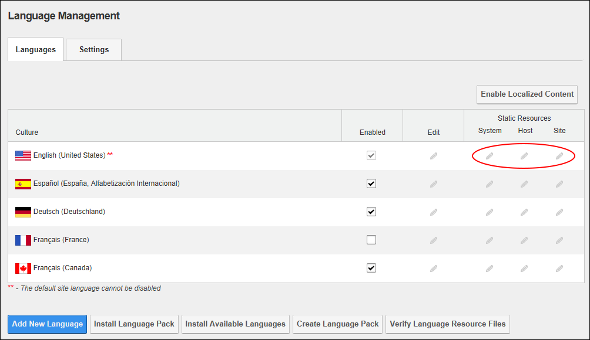
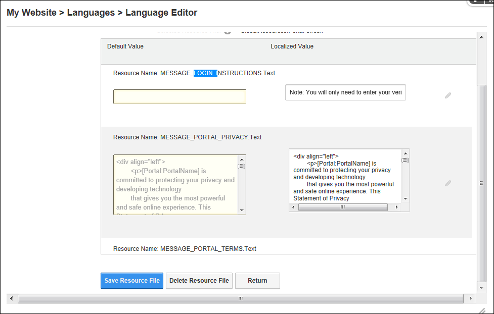
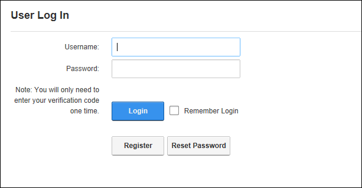

Adding/Editing the Login Message
How to edit the login instructions displayed on the Account Login module using the Languages module. No message is displayed by default.
- Navigate to Admin > Advanced Settings >
 Languages - OR - Go to a Languages module.
Languages - OR - Go to a Languages module.
- In the Static Resources section, click the Edit
 button beside the required resource. Select to either edit the statement for this Site, the Host site or the full System (all current and future sites) and then the language file to be edited. This displays GlobalResources.Portal-0.resx at Selected Resource File as the files ready for editing. Note: This is where you will find the files most commonly desired for editing such as portal and email messages.
button beside the required resource. Select to either edit the statement for this Site, the Host site or the full System (all current and future sites) and then the language file to be edited. This displays GlobalResources.Portal-0.resx at Selected Resource File as the files ready for editing. Note: This is where you will find the files most commonly desired for editing such as portal and email messages.

- Find (Crtl + F) Resource Name: MESSAGE_LOGIN_INSTRUCTIONS.Text. Note: If Paging is enabled then it may be located on a subsequent page.
- To edit the message, perform one of the following options:
- Edit the message body using HTML tags in the Localized Value text box below.

- OR -
- Click the Edit button. This displays the message "All unsaved changes will be lost if you continue. Are you sure you want to continue?"
- Click the OK button.
- Enter your new message into the RTE ensuring you include the replacement tokens displayed at Default Value.
- This will return you to the Language Editor.
- Optional. To edit the subject associated with email message language files, edit the associated Subject resource file which will be listed above the Body resource file.
- Click the Save Resource File button.
- Optional. Repeat all of the above steps to update this message for another language.

Login Instructions on the User Log In page